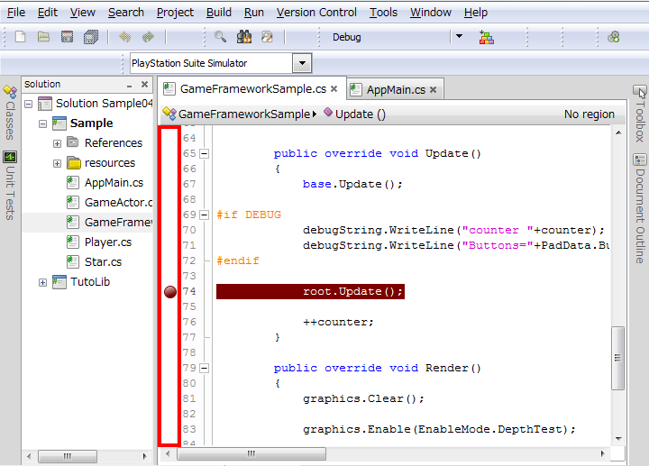
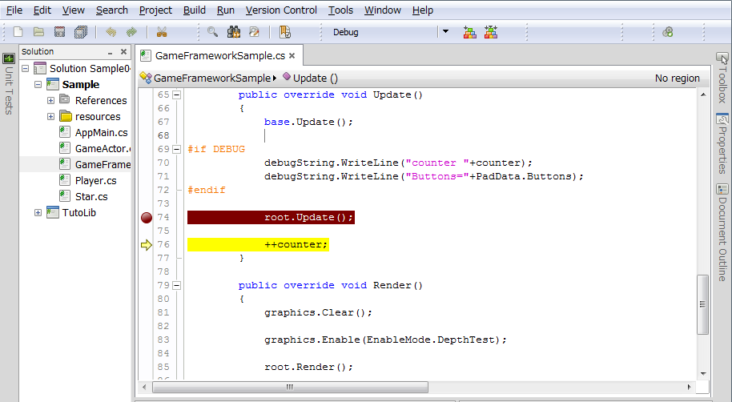
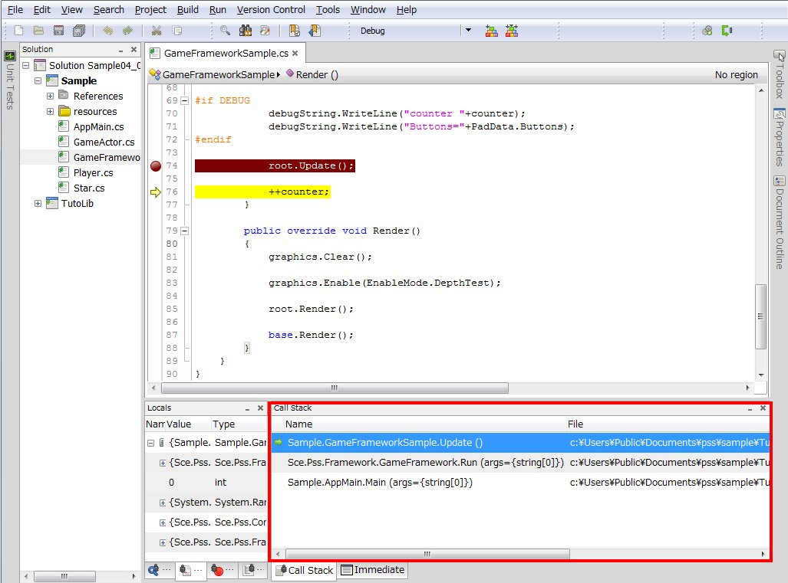
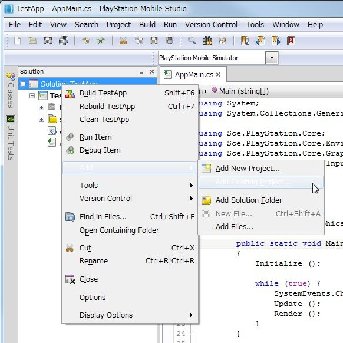

この文書では統合開発環境PSM Studioの基本的な使い方を説明します。
Contents
プログラムをデバッグするには、まずブレークポイントを配置します。
ブレークポイントをセットするには、コードエディタ上で配置したい箇所の左側の領域をクリックします。クリックすると赤い丸が表示されます。
ブレークポイントをセットしたら、[メニュー] - [実行] - [デバッグ] でプログラムを実行します（F5キーでもデバッグ実行できます）。
プログラムを実行すると、ブレークポイントを配置した箇所で停止します。
プログラムが停止したら、F10キーを押すことで1行づつプログラムを実行できます（これをステップ実行といいます）。
関数を呼び出しているコードでF11キーを押すと、処理を関数の中に進めます。Shift+F11なら処理を外に進めます。
プログラムを再開するにはF5キーを押してください。
変数の内容をみるには、[メニュー] - [ビュー] - [デバッグウィンドウ] - [ローカル変数] を選択してください。

ウィンドウ内のリストをクリックすることで変数の内容を見ることができます。
関数の呼出し履歴をみるには、[メニュー] - [ビュー] - [デバッグウィンドウ] - [コールスタック] を選択してください。
ウィンドウ内に関数の呼出し履歴が表示されます。
ライブラリの新規作成は、以下の手順で行います。
- [メニュー] - [File] - [New] - [Solution...] を選択します。
- ダイアログ画面内の左側のツリービューで [C#] - [PlayStation Mobile] を選択し、右側のコントロールから[PlayStation Mobile Library Project] を選択します。
- ライブラリ名をつけ、OKボタンを押します。

作成したライブラリのプロジェクトファイルをソリューションに追加するには、以下の手順で行います。
- ソリューションウィンドウで、[ソリューション] を選択し、[右クリック] - [Add] - [Add Existing Project...]を選択します。

- ダイアログで追加したいプロジェクトファイルを選択し、[Open]ボタンを押します。これでソリューションにプロジェクトファイルが追加されます。

- 次に元のプロジェクトファイルにライブラリへの参照を設定します。ソリューションウィンドウで、元からあるプロジェクトファイルの [References] を選択し、[右クリック] - [Edit References] を選択します。

- ダイアログ画面でProjects タブを選択し、追加したプロジェクトファイルのチェックボックスをチェックし、OKボタンを押します。

- あとはusingでライブラリの名前空間をソースコードに追加すれば、そのライブラリのAPIが使用可能になります。
using System; using TestLib; //<--here namespace TestApp { public class AppMain { ...
ここではコンパイル済みのライブラリをソリューションに追加する方法を説明します。
- ソリューションウィンドウで、プロジェクトファイルの [References] を選択し、[右クリック] - [Edit References] を選択します。

- ダイアログ画面で [.Net Assembly] タブを選択します。追加したいライブラリを選択し、[Add] ボタンを押します。

なお、PSM SDKが標準で提供しているUIや物理ライブラリなどを利用する場合は、[All] タブを選択し、利用するライブラリにチェックをいれます。

- あとはusingでライブラリの名前空間をソースコードに追加すれば、そのライブラリのAPIが使用可能になります。